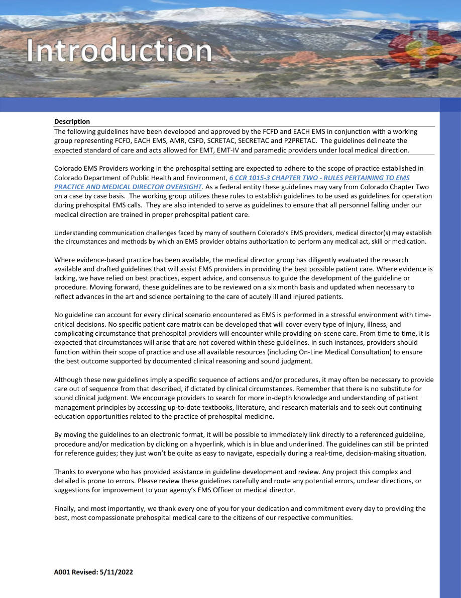
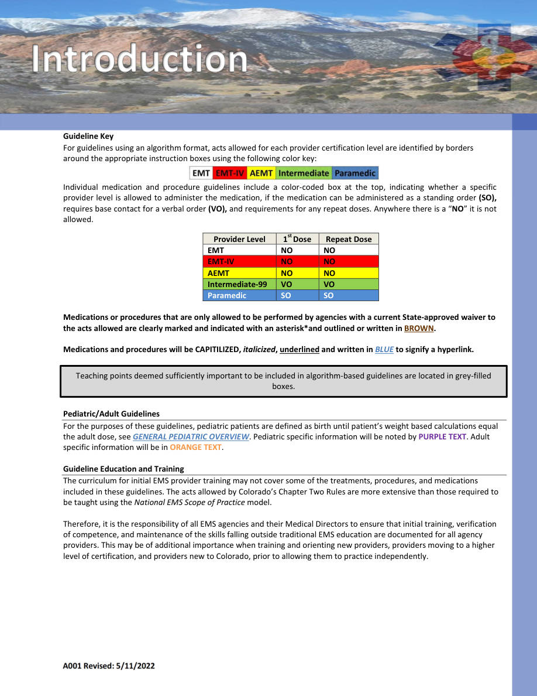
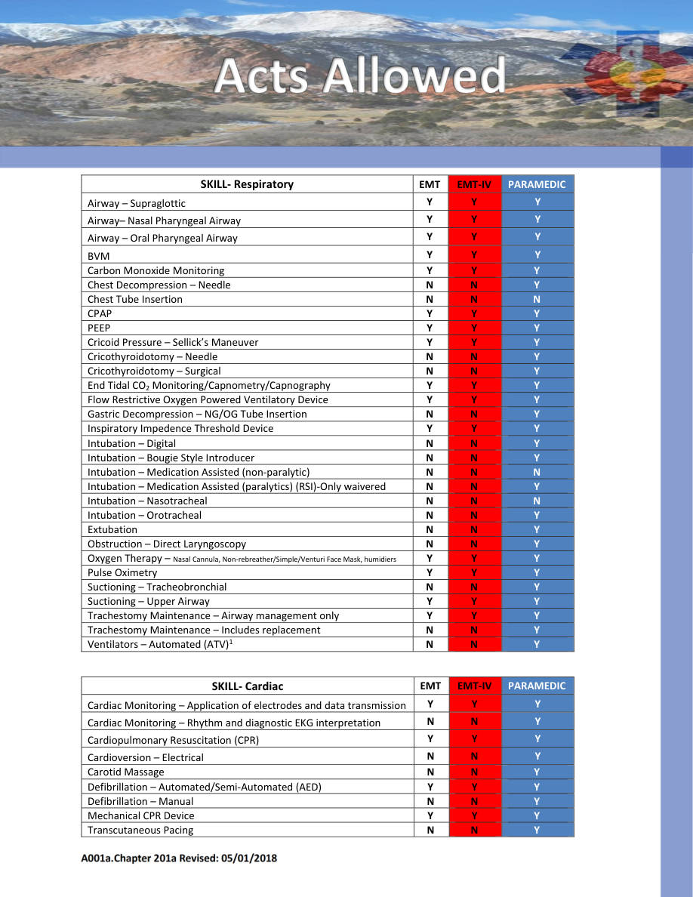
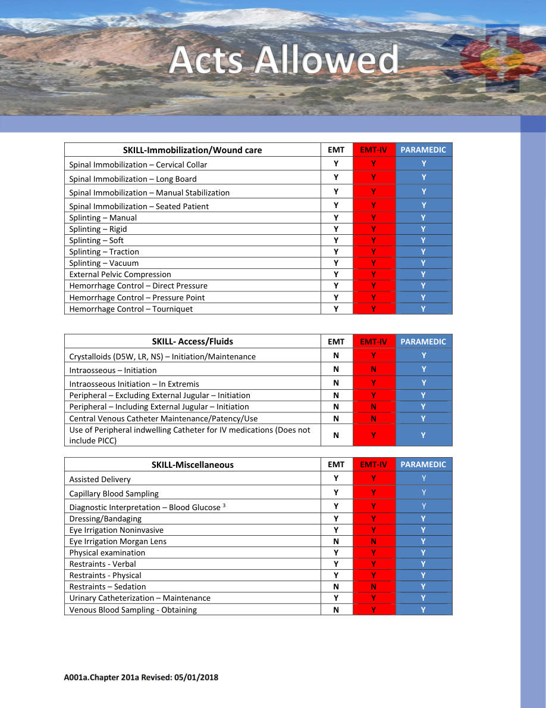

A001 — Guideline Key
General Guidelines • Pages 5-8
Use the scanned pages to see the official tables/charts/algorithms. The extracted text is there for copy/paste and searchability.
Extracted text (page 5)
A001 Revised: 5/11/2022 Description The following guidelines have been developed and approved by the FCFD and EACH EMS in conjunction with a working group representing FCFD, EACH EMS, AMR, CSFD, SCRETAC, SECRETAC and P2PRETAC. The guidelines delineate the expected standard of care and acts allowed for EMT, EMT‐IV and paramedic providers under local medical direction. Colorado EMS Providers working in the prehospital setting are expected to adhere to the scope of practice established in Colorado Department of Public Health and Environment, 6 CCR 1015‐3 CHAPTER TWO ‐ RULES PERTAINING TO EMS PRACTICE AND MEDICAL DIRECTOR OVERSIGHT. As a federal entity these guidelines may vary from Colorado Chapter Two on a case by case basis. The working group utilizes these rules to establish guidelines to be used as guidelines for operation during prehospital EMS calls. They are also intended to serve as guidelines to ensure that all personnel falling under our medical direction are trained in proper prehospital patient care. Understanding communication challenges faced by many of southern Colorado’s EMS providers, medical director(s) may establish the circumstances and methods by which an EMS provider obtains authorization to perform any medical act, skill or medication. Where evidence‐based practice has been available, the medical director group has diligently evaluated the research available and drafted guidelines that will assist EMS providers in providing the best possible patient care. Where evidence is lacking, we have relied on best practices, expert advice, and consensus to guide the development of the guideline or procedure. Moving forward, these guidelines are to be reviewed on a six month basis and updated when necessary to reflect advances in the art and science pertaining to the care of acutely ill and injured patients. No guideline can account for every clinical scenario encountered as EMS is performed in a stressful environment with time‐ critical decisions. No specific patient care matrix can be developed that will cover every type of injury, illness, and complicating circumstance that prehospital providers will encounter while providing on‐scene care. From time to time, it is expected that circumstances will arise that are not covered within these guidelines. In such instances, providers should function within their scope of practice and use all available resources (including On‐Line Medical Consultation) to ensure the best outcome supported by documented clinical reasoning and sound judgment. Although these new guidelines imply a specific sequence of actions and/or procedures, it may often be necessary to provide care out of sequence from that described, if dictated by clinical circumstances. Remember that there is no substitute for sound clinical judgment. We encourage providers to search for more in‐depth knowledge and understanding of patient management principles by accessing up‐to‐date textbooks, literature, and research materials and to seek out continuing education opportunities related to the practice of prehospital medicine. By moving the guidelines to an electronic format, it will be possible to immediately link directly to a referenced guideline, procedure and/or medication by clicking on a hyperlink, which is in blue and underlined. The guidelines can still be printed for reference guides; they just won’t be quite as easy to navigate, especially during a real‐time, decision‐making situation. Thanks to everyone who has provided assistance in guideline development and review. Any project this complex and detailed is prone to errors. Please review these guidelines carefully and route any potential errors, unclear directions, or suggestions for improvement to your agency’s EMS Officer or medical director. Finally, and most importantly, we thank every one of you for your dedication and commitment every day to providing the best, most compassionate prehospital medical care to the citizens of our respective communities. ODUCTION
Extracted text (page 6)
A001 Revised: 5/11/2022 Guideline Key For guidelines using an algorithm format, acts allowed for each provider certification level are identified by borders around the appropriate instruction boxes using the following color key: Individual medication and procedure guidelines include a color‐coded box at the top, indicating whether a specific provider level is allowed to administer the medication, if the medication can be administered as a standing order (SO), requires base contact for a verbal order (VO), and requirements for any repeat doses. Anywhere there is a “NO” it is not allowed. Provider Level 1st Dose Repeat Dose EMT NO NO EMT‐IV NO NO AEMT NO NO Intermediate‐99 VO VO Paramedic SO SO Medications or procedures that are only allowed to be performed by agencies with a current State‐approved waiver to the acts allowed are clearly marked and indicated with an asterisk*and outlined or written in BROWN. Medications and procedures will be CAPITILIZED, italicized, underlined and written in BLUE to signify a hyperlink. Pediatric/Adult Guidelines For the purposes of these guidelines, pediatric patients are defined as birth until patient’s weight based calculations equal the adult dose, see GENERAL PEDIATRIC OVERVIEW. Pediatric specific information will be noted by PURPLE TEXT. Adult specific information will be in ORANGE TEXT. Guideline Education and Training The curriculum for initial EMS provider training may not cover some of the treatments, procedures, and medications included in these guidelines. The acts allowed by Colorado’s Chapter Two Rules are more extensive than those required to be taught using the National EMS Scope of Practice model. Therefore, it is the responsibility of all EMS agencies and their Medical Directors to ensure that initial training, verification of competence, and maintenance of the skills falling outside traditional EMS education are documented for all agency providers. This may be of additional importance when training and orienting new providers, providers moving to a higher level of certification, and providers new to Colorado, prior to allowing them to practice independently. Teaching points deemed sufficiently important to be included in algorithm‐based guidelines are located in grey‐filled boxes.
Extracted text (page 7)
A001a.Chapter 201a Revised: 05/01/2018 SKILL‐ Respiratory EMT EMT‐IV PARAMEDIC Airway – Supraglottic Y Y Y Airway– Nasal Pharyngeal Airway Y Y Y Airway – Oral Pharyngeal Airway Y Y Y BVM Y Y Y Carbon Monoxide Monitoring Y Y Y Chest Decompression – Needle N N Y Chest Tube Insertion N N N CPAP Y Y Y PEEP Y Y Y Cricoid Pressure – Sellick’s Maneuver Y Y Y Cricothyroidotomy – Needle N N Y Cricothyroidotomy – Surgical N N Y End Tidal CO2 Monitoring/Capnometry/Capnography Y Y Y Flow Restrictive Oxygen Powered Ventilatory Device Y Y Y Gastric Decompression – NG/OG Tube Insertion N N Y Inspiratory Impedence Threshold Device Y Y Y Intubation – Digital N N Y Intubation – Bougie Style Introducer N N Y Intubation – Medication Assisted (non‐paralytic) N N N Intubation – Medication Assisted (paralytics) (RSI)‐Only waivered N N Y Intubation – Nasotracheal N N N Intubation – Orotracheal N N Y Extubation N N Y Obstruction – Direct Laryngoscopy N N Y Oxygen Therapy – Nasal Cannula, Non‐rebreather/Simple/Venturi Face Mask, humidiers Y Y Y Pulse Oximetry Y Y Y Suctioning – Tracheobronchial N N Y Suctioning – Upper Airway Y Y Y Trachestomy Maintenance – Airway management only Y Y Y Trachestomy Maintenance – Includes replacement N N Y Ventilators – Automated (ATV)1 N N Y SKILL‐ Cardiac EMT EMT‐IV PARAMEDIC Cardiac Monitoring – Application of electrodes and data transmission Y Y Y Cardiac Monitoring – Rhythm and diagnostic EKG interpretation N N Y Cardiopulmonary Resuscitation (CPR) Y Y Y Cardioversion – Electrical N N Y Carotid Massage N N Y Defibrillation – Automated/Semi‐Automated (AED) Y Y Y Defibrillation – Manual N N Y Mechanical CPR Device Y Y Y Transcutaneous Pacing N N Y
Extracted text (page 8)
A001a.Chapter 201a Revised: 05/01/2018 SKILL‐Immobilization/Wound care EMT EMT‐IV PARAMEDIC Spinal Immobilization – Cervical Collar Y Y Y Spinal Immobilization – Long Board Y Y Y Spinal Immobilization – Manual Stabilization Y Y Y Spinal Immobilization – Seated Patient Y Y Y Splinting – Manual Y Y Y Splinting – Rigid Y Y Y Splinting – Soft Y Y Y Splinting – Traction Y Y Y Splinting – Vacuum Y Y Y External Pelvic Compression Y Y Y Hemorrhage Control – Direct Pressure Y Y Y Hemorrhage Control – Pressure Point Y Y Y Hemorrhage Control – Tourniquet Y Y Y SKILL‐ Access/Fluids EMT EMT‐IV PARAMEDIC Crystalloids (D5W, LR, NS) – Initiation/Maintenance N Y Y Intraosseous – Initiation N N Y Intraosseous Initiation – In Extremis N Y Y Peripheral – Excluding External Jugular – Initiation N Y Y Peripheral – Including External Jugular – Initiation N N Y Central Venous Catheter Maintenance/Patency/Use N N Y Use of Peripheral indwelling Catheter for IV medications (Does not include PICC) N Y Y SKILL‐Miscellaneous EMT EMT‐IV PARAMEDIC Assisted Delivery Y Y Y Capillary Blood Sampling Y Y Y Diagnostic Interpretation – Blood Glucose 3 Y Y Y Dressing/Bandaging Y Y Y Eye Irrigation Noninvasive Y Y Y Eye Irrigation Morgan Lens N N Y Physical examination Y Y Y Restraints ‐ Verbal Y Y Y Restraints ‐ Physical Y Y Y Restraints – Sedation N N Y Urinary Catheterization – Maintenance Y Y Y Venous Blood Sampling ‐ Obtaining N Y Y
Scanned pages (tables/charts preserved)
Page 5 scan
Page 6 scan
Page 7 scan
Page 8 scan
